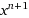
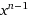
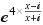
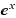

Quick Start - How to rotate a 360 photo:
Use the mouse to move the photo around. Click on
and
to rotate it as desired.
Click on to save.
Details:
This page is inspired by several articles by Henry Segerman on Möbius transformations and spherical image editing. I wrote about the design of this page here.
There is a video showing how to use it here.
Transformations:
Möbius transformations:
Rotate left around fixed points.(*) Successive clicks speed up the rotation speed.
Rotate right.
Stop rotating.
 No rotation.
No rotation.
 Do conformal zoom in on point 1, out on point 2. (*)
Do conformal zoom in on point 1, out on point 2. (*)
 Do conformal zoom out on point 1, in on point 2. (*)
Cancel zoom.
Set Fixed Point 1 at center of viewport. When debugging, this point is represented by a red dot on the image.
Set Fixed Point 2 at center of viewport. When debugging, this point is represented by a blue dot on the image.
Do conformal zoom out on point 1, in on point 2. (*)
Cancel zoom.
Set Fixed Point 1 at center of viewport. When debugging, this point is represented by a red dot on the image.
Set Fixed Point 2 at center of viewport. When debugging, this point is represented by a blue dot on the image.
 Show/hide dots representing fixed points.
(*) If you click on rotate or zoom without having first selected the fixed points, the system will set the current center of the viewport to be fixed point 1, and the antipodal point to be fixed point 2.
Show/hide dots representing fixed points.
(*) If you click on rotate or zoom without having first selected the fixed points, the system will set the current center of the viewport to be fixed point 1, and the antipodal point to be fixed point 2.
Complex transformations:
If selected, these are applied after the Möbius transformations have been applied. The effects can be combined.
 Successive clicks increment n.
 Successive clicks decrement n.
 Successive clicks toggle the effect on/off.
 Successive clicks toggle the effect on/off.
Miscellaneous other functions:
Download the modified 360 photo as an equirectangular image.
Turn off all transforms, revert to original image.
Toggle view to see effect of transformations on the rectangular texture.
Camera Controls:
These have no effect on the image that is downloaded. They just effect how the camera works, but not the underlying image.
Rotate camera to left. Successive clicks increase the speed.
Rotate camera up. Stops at the zenith.
 Rotate camera down. Stops at the nadir.
Rotate camera to the right.
Stop rotating the camera.
Flip camera around to view the antipodal point opposite the current position.
Decrease the field of view by 15%.
Increase the field of view by 15%.
The code is on GitHub at: https://github.com/rwoodley/SphericalPhotoToolkit
Robert Woodley, 2016-2017.
Rotate camera down. Stops at the nadir.
Rotate camera to the right.
Stop rotating the camera.
Flip camera around to view the antipodal point opposite the current position.
Decrease the field of view by 15%.
Increase the field of view by 15%.
The code is on GitHub at: https://github.com/rwoodley/SphericalPhotoToolkit
Robert Woodley, 2016-2017.
rwoodley.org
@rwoodley
Licensed under the Apache License, Version 2.0 (the "License");
you may not use this file except in compliance with the License.
You may obtain a copy of the License at
http://www.apache.org/licenses/LICENSE-2.0
Unless required by applicable law or agreed to in writing, software
distributed under the License is distributed on an "AS IS" BASIS,
WITHOUT WARRANTIES OR CONDITIONS OF ANY KIND, either express or implied.
See the License for the specific language governing permissions and
limitations under the License.